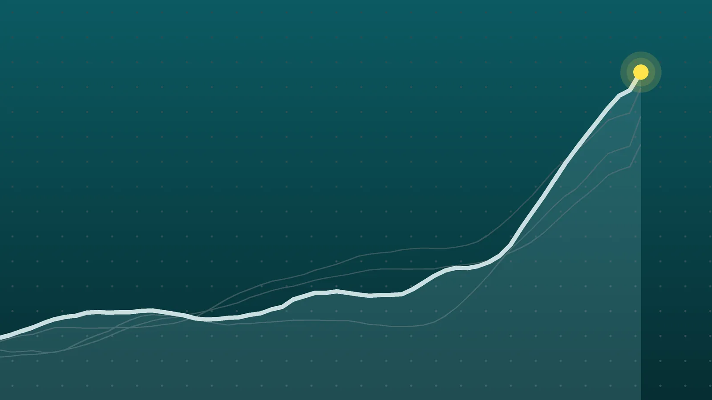

WorldExplainer
France Protests: 2,400 Arrests After Cost-of-Living Riots
A student movement over crowded classrooms merged with anger over fuel and food prices. The result was one of France’s most destructive weekends in years, six months before a presidential election.

Quick take
- Between 550,000 (Interior Ministry) and 800,000 (organizers) people marched across France on Saturday, Oct. 17.
- Nearly 2,400 people were arrested and about 1,000 police officers and gendarmes were hurt, according to figures reported Oct. 19.
- Fire gutted the 19th-century town hall in Limoges, and more than 1,500 shops were damaged nationwide.
- French consumer prices rose 3.1% in September from a year earlier, with energy up 21.3%, according to statistics agency Insee.
Why it's trending Nationwide marches in France on Oct. 17 ended in looting and arson, leading to about 2,400 arrests and a televised address by President Emmanuel Macron.
What happened
The France protests that filled city streets on Saturday, Oct. 17, ended in a night of looting, fires and clashes with police. The Interior Ministry put turnout at about 550,000 people nationwide, while organizers claimed roughly 800,000. Most people marched peacefully, but masked groups smashed shop windows and attacked public buildings in Paris, Marseille, Lyon, Bordeaux, Limoges and other cities.
By Monday, nearly 2,400 people had been arrested and about 1,000 police officers and gendarmes had been injured, seven of them seriously, according to figures reported by ABC News in Australia and Reuters. One person died during the Paris march after a cardiac arrest; officials say the death was a health matter, not a result of the violence, and the Paris prosecutor’s office is looking into it.
President Emmanuel Macron spoke to the nation Sunday night. He condemned the destruction, separated peaceful marchers from rioters and promised that those responsible would answer for it. “Tonight, we all feel anger and shame,” he said.
How the numbers grew
The tally kept climbing as police and prosecutors filed reports. Here is how the official picture changed over about 36 hours:
| Moment | Arrests | Officers injured |
|---|---|---|
| First estimate from the prime minister | About 1,200 | About 150 |
| Sunday, Oct. 18 (AP) | At least 1,800 | Not given |
| Monday, Oct. 19 (Reuters) | Nearly 2,400 | About 1,000 |
For scale, the Associated Press noted that the near-2,000 arrests on a single day of yellow vest protests in December 2018 had been the benchmark. This weekend went past it.
The Paris region alone accounted for 855 arrests by Sunday, and 557 people were still being held, according to the AP.
What got damaged
- Limoges: A fire that the local prefect says was set on purpose gutted the city’s 19th-century town hall, and its clock tower came down. Mayor Guillaume Guérin has said he will resign if the city doesn’t get money to rebuild.
- Paris: Shops in tourist and shopping districts were looted. On Sunday, police fired tear gas at a fresh crowd at Place de la République, where part of the base of the Marianne statue had been pulled apart.
- Marseille: People pushed into the city hall lobby, and a police station was damaged.
- Lyon and Bordeaux: A tourist office on Place Bellecour in Lyon was set on fire. In Bordeaux, a group got inside the prefect’s residence.
Retailers took a heavy hit. More than 1,500 shops were affected, and early industry estimates put losses at several hundred million euros, Business Standard reports. Carrefour alone said 50 of its stores were damaged and 20 looted.
Why people marched
The protests didn’t start with fuel prices. For about a month, students had been demonstrating over teacher shortages, run-down school buildings and packed classrooms. Unions, left-wing groups and veterans of the yellow vest movement then joined in, and the cause widened to the cost of living. The yellow vests first appeared in 2018 to fight fuel taxes, and organizers branded Saturday’s events “yellow and youth” marches.
The money pressure is real. According to the national statistics agency Insee, prices in September were 3.1% higher than a year earlier, up from 2.4% in August. That’s a jump of 0.7 percentage points in a single month. Energy was up 21.3%, and petroleum products were up 36.2%, a surge ABC links partly to the war in the Middle East. (For background on the shipping crisis behind those fuel costs, see our explainer on the Strait of Hormuz.)
At the same time, the government is asking for belt-tightening. Its 2027 budget plan calls for a €54 billion (about $60.7 billion) fiscal adjustment, with the aim of trimming the deficit from a projected 5.4% of economic output this year to 5% next year.
Anger over policing has added fuel. In two separate cases, a teenager lost a hand to a police grenade. The Interior Ministry now has 36 internal inquiries underway into claims that officers used excessive force.
Who says what
- The government blames ultra-left groups and criminals for the violence. Interior Minister Laurent Nuñez wrote that the right to protest is fundamental, but deliberately sowing disorder is not. Economy Minister Roland Lescure said those who caused damage will have to pay for it.
- Marine Le Pen, the far-right leader who tops early polls for the 2027 election, and her running mate Jordan Bardella blamed the rioters and called for order to be restored.
- Jean-Luc Mélenchon, the far-left leader who joined the Paris march, accused Prime Minister Sébastien Lecornu of stoking tensions and urged Macron to meet the students’ demands.
- President Donald Trump linked the unrest to immigration in a Truth Social post. French authorities have not connected immigrants to the violence, the AP notes.
What happens next
Macron ruled out an immediate state of emergency, but regional officials can ban demonstrations where they need to protect buildings and businesses. Lecornu was set to chair a crisis meeting with business groups on Monday to discuss losses and possible aid, and the mayors of Paris, Marseille and Lyon have asked to meet him. Macron has also promised full transparency about how police handled the weekend, after criticism that they were underprepared.
The bigger question is political. Macron is in the last stretch of his term, with a presidential election due next spring, and every major camp is already using the weekend to make its case.
Quick answers
Why are people protesting in France?
The movement began with students angry about teacher shortages and crowded schools, then grew into a broader protest over the cost of living. Inflation hit 3.1% in September, driven by a 21.3% rise in energy prices.
How many people were arrested in the France riots?
Nearly 2,400 nationwide, according to figures reported Oct. 19. About 1,000 police officers and gendarmes were injured.
Are the yellow vests back?
Partly. Former yellow vest activists helped call Saturday’s “yellow and youth” marches, alongside unions and student groups. The original movement began in 2018 over fuel taxes.
Sources
- ABC News (Australia) Emmanuel Macron denounces 'unbridled' violence in France as thousands arrestedOct. 19, 2026
- ABC News (AP) Macron to address nation after riots and looting lead to 1,800 arrests across FranceOct. 18, 2026
- Business Standard France unrest: Macron urges calm after 2,400 arrests amid riots, lootingOct. 19, 2026
Keep reading

Alberta Referendum Results: About 76% Vote to Stay in Canada
Alberta referendum results: about 76% voted to stay in Canada, early counts show. What the result means, who said what, and what comes next.

Trump and Zelenskyy: Rift Deepens as Oslo Peace Talks Open
Trump says someone else should negotiate for Ukraine as Zelenskyy meets envoy Steve Witkoff in Oslo. What’s behind the split and what to watch next.
Pope Leo Returns to St. Peter’s 8 Days After Lung Cancer Surgery
Pope Leo XIV held his first general audience on Oct. 21 since lung cancer surgery. What doctors have said, how he looked, and what it means for his November trip.